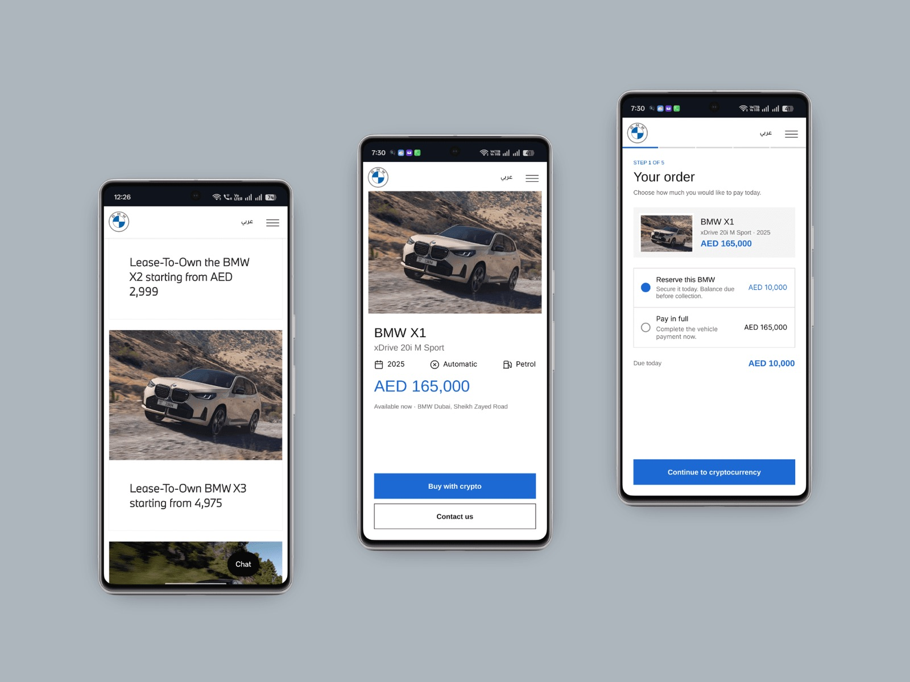
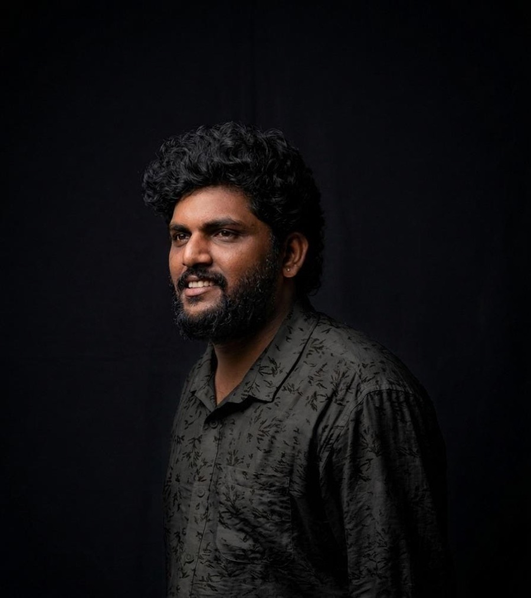
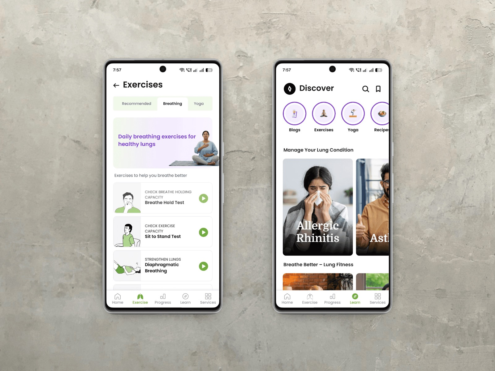
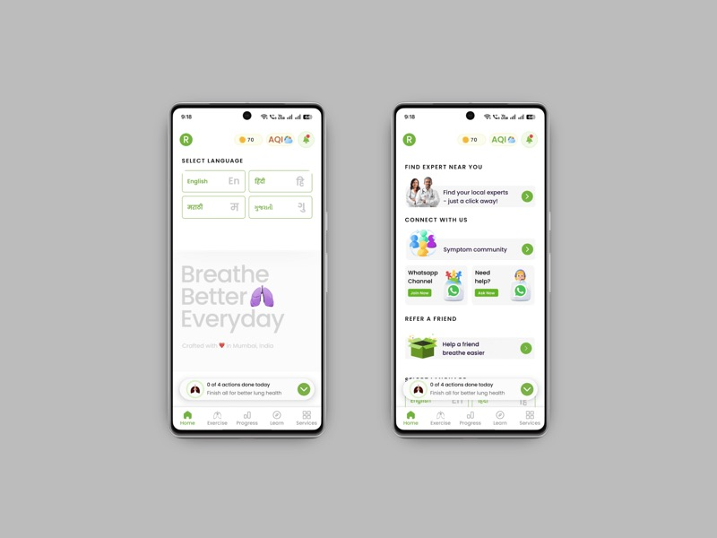
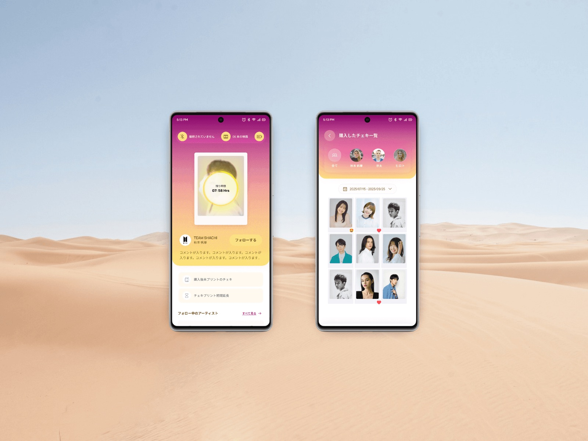

BMW Dubai
Bringing compliant digital-asset payments into a high-value vehicle leasing journey — cutting a 4.5-day offline application down to eight minutes.
View case study
I’m Rashank R, a Senior UI/UX Designer focused on creating intuitive, scalable and human-centered digital experiences across web, mobile and enterprise environments.

I turn complex product requirements into clear, useful and engaging experiences.
Behind every click, swipe and drop-off there is a person trying to accomplish something meaningful. I bridge business objectives and human psychology — studying behavioural patterns and mental models so the interfaces I design feel second nature to the people using them.
As a senior designer I lead with that perspective: mentoring design teams and collaborating with product leaders to create experiences that build trust, reduce effort and deliver value.
5+
12+
50%
88.5
A collection of digital products, platforms and experiences I’ve designed across SaaS, healthcare, automotive, media and enterprise environments.
05+
Bringing compliant digital-asset payments into a high-value vehicle leasing journey — cutting a 4.5-day offline application down to eight minutes.
View case study
Turning a failed breath test into a trusted diagnostic moment — abandonment fell from 42.6% to 8.4%.
View case study


An image-first mobile space where fans collect, style and celebrate the moments they care about — built on the tactile feel of instant film.
View case studyA sales and marketing CRM launched across web and mobile — rebuilt from a real-estate CRM project that was close to cancellation.
Additional projects are being documented — a Finance Academy platform and a leading news agency product for GCC clients, field research in the weather forecasting domain for a US client, and a peer-to-peer digital asset trading platform for EMEA/MENA markets.
Confirm the problem is worth solving and connects to a company or product-line priority before any design work begins. Review business signals — support-ticket volume, churn drivers, sales-loss reasons, app-store reviews and NPS. Kick off with PM, design, engineering, research and data science to align on a one-page problem brief: context, hypothesis, target users, constraints and success metrics.
Generative research — contextual interviews, diary studies, field visits, support-ticket and call-transcript analysis. Quantitative discovery through funnel and behavioural analytics, cohort analysis and survey instruments. Competitive and comparative audits across direct competitors and adjacent categories. Interviews with end users, IT admins and economic buyers feed journey maps and service blueprints that capture the full end-to-end experience.
Turn raw research into a sharp, shared problem statement and a measurable definition of success. Affinity mapping clusters findings into root causes rather than symptoms. Success metrics are defined up front so impact can later be proven, and severity is mapped against effort to prioritise. The framed problem is socialised with stakeholders before ideation — the cheapest point to catch a misaligned direction.
Explore a wide solution space before narrowing, so the team doesn’t anchor on the first workable idea. Multiple concept directions run in parallel, storyboarded end to end — including edge cases such as poor GPS signal, multi-stop journeys or admin permission conflicts. Down-select to two or three directions worth prototyping, using the success metrics as the filter.
Information architecture and task flows before visual design — critical for dense workflows with many states and permissions. Low-fidelity wireframes lock structure and hierarchy, then high-fidelity interactive prototypes simulate real behaviour with realistic data and error states. Motion and interaction studies for key transitions, design-system components and accessibility annotations.
Pressure-test the design against real users and real constraints before committing engineering resources. Moderated usability testing measures task success, time on task and error rate; concept and preference testing compares directions. Design and engineering feasibility review confirms the solution is buildable in scope, followed by legal, privacy, security and accessibility review.
Developer handoff with detailed specs, redlines and design-system component references, plus pairing sessions with engineers to resolve ambiguity quickly. Design QA on staging builds covers visual fidelity, interaction correctness, responsive behaviour and accessibility compliance, with localisation QA for multi-locale products and a regression check against the design system.
Track the pre-defined success metrics against a baseline and run a post-launch retrospective: what worked, what surprised the team, what should change in the process itself. Unresolved problems feed back into discovery, the research repository and design system are updated with newly validated patterns, and results are shared broadly so the knowledge outlives the project.
Aligning on the opportunity in a shared problem brief — context, hypothesis, target users, constraints and the success metrics we will be judged against.
Feasibility review before commitment, detailed specs and redlines at handoff, pairing sessions during implementation, and design QA on staging builds.
From delivery managers to CEO and board level — framing design decisions in business terms, and rebuilding confidence on projects that have lost it.
Pairing generative research with funnel, cohort and behavioural analytics so decisions rest on both the “why” and the “how many”.
Direct engagement with international clients across the GCC, EMEA/MENA, Japan and the US — workshops, presentations and long-run stakeholder relationships.
Whether you’re building a new product, improving an existing experience, or solving a complex UX problem — I’d love to hear about it.
Available for selected opportunities